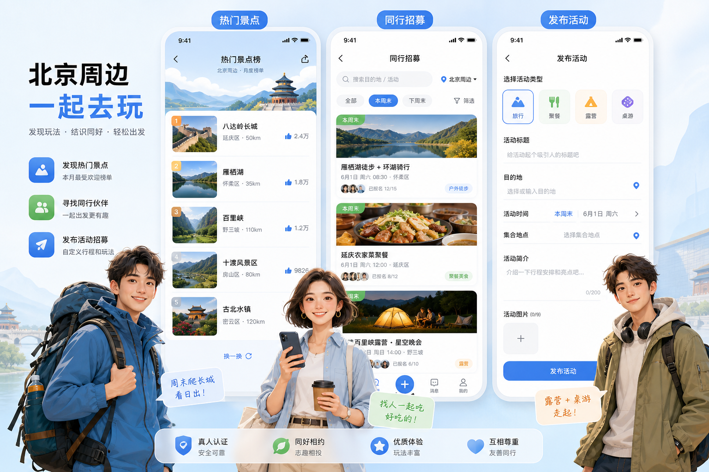

景点月榜
用户选择月份，看到北京及周边当月热门景点。点赞越多排序越靠前。它更像内容入口和灵感入口，适合第二阶段做。
你的三个痛点不是三条完全分散的产品线。景点榜单解决“去哪儿”，行程和活动解决“和谁去、一起做什么”。当前最适合先把第二点做扎实，然后把第三点并入同一套发布系统：发布的不是单纯行程，而是“活动”。旅行、吃饭、露营、游戏都只是活动类型。
“附近的人，一起出发”。名字短、好记，不把产品锁死在旅游里，后续扩展吃饭、露营、桌游、城市活动都自然。
用户选择月份，看到北京及周边当月热门景点。点赞越多排序越靠前。它更像内容入口和灵感入口，适合第二阶段做。
这是当前 MVP 核心。用户发布行程，附近或同城用户报名/加入，形成真实线下出行关系。先把这条链路做顺。
建议和行程页合并。把“行程”升级成“活动”，字段加活动类型即可：旅行、吃饭、露营、游戏、徒步、摄影。
优先选不太窄、容易口口相传、能覆盖旅行和本地活动的名字。
不要一开始同时做太多入口。先验证“发布 - 报名 - 成行 - 评价/沉淀”的闭环。
三个人物分别代表户外旅行者、饭局/活动组织者、露营游戏参与者。UI 图里把景点月榜、同行招募、发布活动放在同一个产品体系里。
